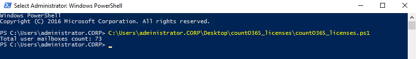

How to count number of licenses required for auditing a Microsoft Office 365 tenant?
In Microsoft Office 365, you can create different types of mail accounts for different purposes. However, Netwrix Auditor requires purchasing licenses only for Mailbox accounts; there is no charge for accounts of any other types:
In Microsoft Office 365, you can create different types of mail accounts for different purposes. However, Netwrix Auditor requires purchasing licenses only for Mailbox accounts; there is no charge for accounts of any other types:
- Mailbox—requires license
- Group—free
- Resource—free
- Contact—free
- Shared—free
- Download ZIP file with the shell script provided by Netwrix and extract it. This script counts the number of mailbox accounts in your Office 365 tenant.
Note: You can run the script on any computer where Windows PowerShell is installed. The
computer must be connected to the Internet.
- Run the Windows PowerShell as Administrator and then invoke the countO365_licenses.ps1 script.
- Enter your Office 365 account credentials when prompted and click OK.
- When the script completes, you will see a number of mailbox accounts for which you need to purchase licenses:
- Connect to Exchange Online as described in the Microsoft article.
- Execute the following commands:
$userMailboxes = Get-Mailbox -RecipientTypeDetails UserMailbox -ResultSize Unlimited
$userMailboxes.count
$userMailboxes.count
- The displayed number represents for how many mailbox accounts you need to purchase licenses.